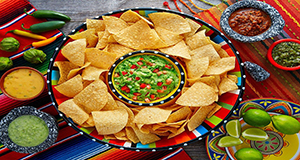

Nachos
Contexto Histórico
A história do “nacho” começa no início da década de 1940 na cidade de Piedras Negras, no México, que fica a apenas seis quilômetros da fronteira americana e perto de Eagle Pass, no Texas. Aquele era o local do histórico Fort Duncan, que durante a Segunda Guerra Mundial foi usado como uma instalação de apoio para o Aeródromo do Exército Eagle Pass. Com a fronteira a apenas alguns quilômetros de distância, muitos dos que estavam estacionados na região frequentemente viajavam ao México para uma refeição melhor.
Antes da década de 1940, a palavra “nacho” tinha dois significados - um era uma gíria Tex-Mex combinando “naturalmente” e “claro” em “nacho”. O outro era um apelido comum para um menino cujo nome era “ Ignacio ”- basicamente o equivalente mexicano de chamar um garoto chamado William“ Billy ”ou Timothy“ Timmy ”.
A descoberta deste último fato levou Adriana Orr do Oxford English Dictionary em uma busca para ver se havia um Ignacio por trás dos nachos. O que ela finalmente encontrou foi um homem chamado Ignacio Anaya Sr. que, embora ele provavelmente não tenha sido a primeira pessoa a decidir misturar tortilla chips com queijo derretido e jalapenos, parece ser a pessoa diretamente responsável pelo nachos se tornar uma coisa, junto com emprestar seu nome ao item alimentar.

Ingredientes:
500g de carne moída
200g de feijão
Azeite
Alho
Cebola
Orégano e pimenta vermelha a gosto
1 xícara de molho de tomate
1 caldo de carne
Sal se necessário
Salsinha a gosto
1 copo de requeijão cremoso
1 pacote de nachos de 200g
200g de mussarela ralada
100g de azeitonas recheadas fatiadas
MODO DE PREPARO:
Cozinhe o feijão em separado e aqueça o azeite e frite a cebola e o alho.
Depois junte a carne moída, o orégano, a pimenta e o caldo de carne. Refogue bem e junte o molho e deixe ficar bem sequinha. Coloque o feijão já cozido, adicione a salsinha, misture tudo e desligue.
Unte um refratário e coloque os nachos. Cubra com o chilli e espalhe o requeijão cremoso, a mussarela ralada, as azeitonas fatiadas e enfeite as laterais do prato com nachos.
Por último, leve ao forno somente para derreter a mussarela.
Dicas e informações – Faça com chilli (feijão, carne moída, azeitona e pimenta vermelha): é o clássico dos clássicos. Esta receita rende cinco porções e demora menos de uma hora para ficar pronta.